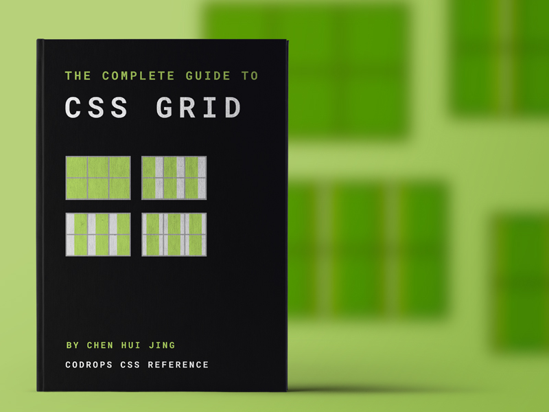

The Story of CSS, from it's Creators
While the modern concept of a “grid layout” has been with us since the Industrial Revolution, grids have been a design tool for centuries.
As such, it shouldn’t come as a shock that grid-based layouts have been a goal of CSS since the beginning.
According to Dr. Bert Bos, who co-created CSS with Håkon Wium Lie, grid-based layouts have actually been on his mind for quite some time.
“CSS started as something very simple,” Bos recalled.
“It was just a way to create a view of a document on a very simple small screen at the time.
Twenty years ago, screens were very small.
So, when we saw that we could make a style sheet for documents, we thought,
Well, what else can we do now that we have a system for making style sheets?”

With grid concepts being thrown at the wall of the CSS Working Group with some regularity, folks were hopeful one of them would stick eventually. And the idea that did was a proposal from a couple of folks at Microsoft who had been looking for a more robust layout tool for one of their web-based products.